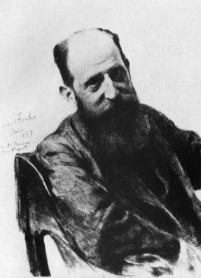

Cet essai a d’abord paru en turc. La version française est de ma main. Les séminaires de Lacan et les Écrits sont cités dans l’original français. Les textes de Freud sont cités sous leurs titres français usuels, avec l’année de première publication.

ἀγάλματα θεῶν
Platon, Le Banquet, 215b
images de dieux
I
Le concept de transfert est né, dans l’histoire de la psychanalyse, d’un échec. Le traitement d’Anna O. par Josef Breuer, au début des années 1880, est connu comme le cas où est née la « cure par la parole » ; or ce même traitement prit fin brusquement et sans explication. Selon le récit donné en 1953 par le biographe de Freud, Ernest Jones, Breuer, effrayé par les sentiments intenses de sa patiente à son égard et par la jalousie qu’ils éveillaient chez sa femme, abandonna le traitement, et la patiente traversa un accouchement imaginaire.1 Ce récit a été largement mis en doute par les recherches ultérieures ; mais sa place dans la légende psychanalytique résume bien la question qui retint l’attention de Freud : que sont ces sentiments intenses qu’un patient développe envers son médecin, et qu’en faire ?


Le vrai nom d’Anna O. était Bertha Pappenheim. Née à Vienne en 1859, fille d’une riche famille juive, elle avait développé en 1880 de graves symptômes en soignant son père atteint d’une maladie mortelle : paralysies, troubles de la vue, quintes de toux, une période où elle ne pouvait plus parler allemand et ne parlait qu’anglais. Breuer lui rendit visite presque chaque jour pendant un an et demi. Le soir, la patiente entrait dans une sorte d’état hypnotique d’absorption en elle-même, racontait des scènes de la journée et du passé, et à mesure qu’elle les racontait, certains de ses symptômes passaient. Elle avait elle-même donné à la méthode deux noms en anglais : talking cure, la cure par la parole, et, mi-plaisantant, chimney sweeping, le ramonage.2 Le nom de la psychanalyse serait donné plus tard par Freud ; mais le premier nom de sa méthode fut une expression qu’une patiente, une jeune femme, trouva dans une autre langue, aux jours où elle avait perdu la sienne.
L’autre protagoniste de l’histoire, Josef Breuer, était l’un des médecins les plus respectés de Vienne. Physiologiste, il avait apporté des contributions pionnières à la régulation nerveuse de la respiration, connue encore aujourd’hui sous le nom de réflexe de Hering-Breuer, et à la fonction des canaux semi-circulaires de l’oreille interne dans le sens de l’équilibre. Il avait quatorze ans de plus que Freud ; pendant des années, il avait été l’ami du jeune Freud, l’avait soutenu financièrement et partagé ses cas avec lui. C’est lui qui lui raconta pour la première fois le traitement d’Anna O., en novembre 1882, dans les années où Freud n’avait pas encore rencontré Charcot.3 Mais les chemins des deux hommes se séparèrent peu après la publication des Études sur l’hystérie. Alors que Freud plaçait la sexualité de plus en plus au centre de l’origine des névroses, Breuer refusa de le suivre. Dans les années suivantes, Freud parla de Breuer avec une froideur croissante, tandis que Breuer ne mit jamais en avant sa part dans la naissance de la psychanalyse. La première scène du transfert avait ainsi, sous cet angle, pris fin deux fois sur une rupture : entre le médecin et sa patiente, et entre le médecin et son jeune collègue. L’histoire de la psychanalyse commence, en un sens, par une écriture qui tente de comprendre ce que signifiaient ces deux ruptures.
Freud affronte ouvertement ces sentiments pour la première fois dans le dernier chapitre des Études sur l’hystérie, écrites avec Breuer en 1895, consacré à la psychothérapie. Il remarque que ses patientes développent parfois envers le médecin des souhaits et des sentiments issus d’autres figures de leur vie, et donne à ce phénomène le nom de « fausse connexion » : un sentiment s’est détaché de la personne à qui il appartient et s’est attaché à la personne du médecin.4 Dans cette première période, le transfert est vu comme un obstacle qui complique le traitement et qu’il faut surmonter.
Freud lui-même, dans les mêmes années, se trouvait dans un transfert qu’il n’avait pas nommé. Dans les centaines de lettres qu’il écrivit entre 1887 et 1904 à l’oto-rhino-laryngologiste berlinois Wilhelm Fliess, il lui racontait les premières ébauches de sa théorie, ses propres rêves, ses angoisses, le travail d’auto-analyse qu’il entreprit après la mort de son père. Fliess était, pendant ces années, pour Freud à la fois un ami, un lecteur, et un destinataire supposé savoir quelque chose qu’il ignorait. Dans sa grande étude de l’auto-analyse de Freud, Didier Anzieu montre que cette relation remplissait la fonction d’une relation analytique, et que Freud ne put fonder la psychanalyse qu’à l’intérieur de ce lien, et en le rompant finalement.5 Même une auto-analyse avait besoin d’un destinataire, de quelqu’un qui écoute et qui soit supposé savoir quelque chose.
II
L’expérience qui poussa vraiment Freud à prendre le concept au sérieux fut l’analyse, à l’automne 1900, de la jeune femme de dix-huit ans qu’il nomme « Dora » dans son étude de cas. Dora se plaint des avances sexuelles que lui fait M. K., ami proche de la famille, de la liaison de son père avec Mme K., l’épouse de M. K., et du fait que son père l’ait pour ainsi dire abandonnée à M. K. afin de pouvoir poursuivre cette liaison. Freud analyse en détail deux rêves de Dora ; mais à la onzième semaine de l’analyse, le dernier jour de l’année, la jeune femme met brusquement fin au traitement.
Au centre du cas, il y a une gifle. Quand Dora avait quatorze ans, M. K. avait tenté de l’embrasser, et deux ans plus tard, lors d’une promenade au bord d’un lac, il lui fit une proposition ouverte. Dora le gifle précisément après une phrase que M. K. ajoute à sa proposition : il dit qu’il n’a rien de sa femme, que sa femme ne signifie rien pour lui.6 Dans la lecture de Lacan, la cause de la gifle est cette phrase. L’intérêt véritable de Dora se portait vers Mme K., la femme qu’elle croyait détentrice du secret de la féminité ; M. K. était pour Dora un chemin vers cette femme, un intermédiaire. À l’instant où M. K. dit que sa femme n’est rien pour lui, la structure qui tenait ensemble tout le monde de Dora s’effondre : si Mme K. n’est rien, alors Dora n’est rien non plus pour M. K. Freud n’entendit pas alors le poids de cette phrase ; que Dora quitte le traitement fut peut-être une fuite devant l’idée d’entendre la même phrase de la bouche de Freud.
Dans le post-scriptum de l’étude de cas qu’il publia en 1905, Freud cherche la cause de cette rupture dans sa propre erreur : il n’a pas su remarquer et interpréter à temps les sentiments de Dora à son égard comme la répétition de ses sentiments envers M. K., voire envers son père. Dora, comme pour se venger de M. K., s’est vengée de Freud en quittant le traitement.7 Dans un exposé sur ce cas, en 1951, Lacan pousse d’un pas l’autocritique de Freud. Il montre que Freud n’a pas vu que le véritable objet du désir de Dora n’était pas M. K. mais Mme K., c’est-à-dire que Dora posait sa question sur la féminité dans le corps de cette femme, et que cet aveuglement venait des préjugés propres de Freud et de son propre transfert.8 Dans cet exposé, Lacan lit le cas comme une série de « renversements dialectiques » : chaque plainte de l’analysante, réinterprétée, devient un moment de vérité qui la conduit à interroger sa propre part ; et le transfert apparaît au moment où cette dialectique s’arrête, où l’analyse est bloquée.
III
Le mot allemand que Freud a choisi pour le concept, Übertragung, a dans la langue courante un champ de sens très vaste : le transfert d’une propriété à un autre, le virement d’une somme d’un compte à un autre, la traduction d’un texte d’une langue à une autre, la transmission d’une maladie, la retransmission d’un concert à la radio. Le mot français « transfert » en garde une grande part. La force du concept vient aussi de cette polysémie : dans le transfert, un sentiment est transféré d’une personne à une autre, le passé est viré au présent, la langue d’un ancien amour est traduite dans celle d’une nouvelle relation. Après l’expérience de Dora, Freud définit le concept de façon systématique en 1912, dans La dynamique du transfert. Tout être humain acquiert dans les premières années de sa vie une sorte de modèle, un cliché stéréotypé, qui détermine les conditions d’amour et les pulsions satisfaites par ces conditions ; ce cliché est réimprimé sans cesse avec de nouvelles personnes tout au long de la vie. L’analyste est lui aussi une nouvelle surface où s’imprime le cliché. Le transfert peut apparaître aussi bien sous une forme positive, tendre, que sous une forme négative, hostile ; et l’arme la plus puissante de la résistance de l’analysant est précisément le transfert.9 Deux ans plus tard, dans « Remémoration, répétition et élaboration » (1914), Freud définit le transfert comme un « terrain de jeu » de la répétition : ce qui se répète dans la vie de l’analysant paraît aussi dans la relation analytique ; mais cette fois dans une liberté presque complète, sous une forme qui peut être observée et parlée.
Les « Observations sur l’amour de transfert » de Freud, en 1915, traitent du transfert dans sa forme la plus frappante et la plus délicate : l’analysante qui tombe amoureuse de l’analyste. Freud souligne que cet amour est un amour réel, mais qu’il est provoqué par la situation analytique elle-même et répète les modèles d’amour du passé de l’analysante. Il ajoute que l’analyste ne doit pas attribuer cet amour à son propre charme personnel, ce qui serait une sorte de vanité. Répondre à cet amour comme chercher à le réprimer détruit le traitement ; l’analyste ne doit ni le repousser ni le satisfaire, et doit le traiter comme une matière à analyser.10 Freud relie cette attitude à la règle d’abstinence, l’un des principes fondamentaux de la technique analytique : la cure doit être menée dans un état de privation, où le désir de l’analysant n’est pas satisfait et se voit ainsi forcé de se changer en paroles.
Dans les articles techniques qu’il écrit à la même époque, Freud touche aussi à une scène moins romantique du transfert : l’argent. Dans le texte de 1913 sur le début du traitement, il dit que l’analyste doit traiter les questions d’argent avec la même franchise, la même impudeur que les questions sexuelles, rappelant que la société aborde les deux avec la même hypocrisie.11 Pour Freud, le traitement gratuit, bien que généreux à première vue, augmente souvent la résistance de l’analysant : dans une relation où il ne paie rien, l’analysant se trouve pris dans une dette de reconnaissance, et cette dette rend plus difficile de parler du transfert. Les honoraires de la séance rappellent que la relation analytique n’est pas une relation d’amour ou de faveur, mais un travail mené dans un cadre. L’argent peut aussi devenir un indicateur du rapport de l’analysant au transfert : oublier de payer, retarder, payer en trop, marchander les honoraires sont des conduites qui entrent dans la matière de l’analyse.
Freud a aussi vu la face sombre du transfert. Dans Le Moi et le Ça, en 1923, il écrit que certains patients vont plus mal chaque fois qu’un progrès est fait dans le traitement, qu’une interprétation se révèle juste ou qu’un symptôme s’apaise, et se conduisent comme s’ils résistaient à la guérison ; il nomme ce phénomène la réaction thérapeutique négative.12 Pour ces patients, rester malades est un prix exigé par un sentiment de culpabilité inconscient ; chaque succès de l’analyste est vécu par eux comme une menace qui empêche le paiement de cette dette. Le transfert devient ici moins une scène d’amour ou d’hostilité que de punition, de dette. Plus l’analyste veut que l’analysant guérisse, plus il entre en conflit avec le besoin de l’analysant d’entretenir cette punition.
IV
Les élèves de Freud ont porté le concept dans des directions différentes. Sándor Ferenczi, de Budapest, dans son article « Introjection et transfert », dès 1909, montra que le transfert n’est pas propre à l’analyse, qu’il est à l’œuvre dans l’hypnose, entre médecin et patient, entre maître et élève, dans tous les coins de la vie quotidienne.13 Les dernières années de Ferenczi se passèrent en expériences audacieuses mais risquées qui interrogeaient l’attitude froide et distante de l’analyste ; dans le journal clinique qu’il tint en 1932, il raconte avoir essayé une méthode où analyste et analysant s’analysaient mutuellement. La même année, dans sa conférence « Confusion de langue entre les adultes et l’enfant » au congrès de Wiesbaden, il décrivit le traumatisme ouvert par le fait de répondre à la langue de tendresse d’un enfant dans la langue de passion d’un adulte, et avertit que l’analyste aussi peut répéter ce traumatisme en répondant à la demande de tendresse de l’analysant dans sa propre langue.14
À Londres, Melanie Klein élargit encore le transfert. Dans un article de 1952, elle soutint que le transfert est le report du passé sur le présent non de sentiments ou de figures isolés, mais de « situations totales » : tout ce que raconte l’analysant, une dispute avec un ami, un rêve, un film, peut s’entendre comme l’expression de la relation qu’il vit à ce moment même avec l’analyste.15 Cette vue a profondément marqué la technique de la tradition kleinienne ; l’interprétation continuelle du transfert, à chaque instant, en est devenue la marque distinctive. Lacan critiquerait cette approche au motif qu’elle réduit la parole de l’analysant à la relation avec l’analyste et fait de l’analyse un jeu de miroirs entre deux personnes.
V
Dans son huitième séminaire de 1960–1961, entièrement consacré au transfert, Lacan lit le concept à travers un texte inattendu : le Banquet de Platon. Le dialogue se déroule lors d’un banquet que le poète tragique Agathon donne chez lui pour fêter sa première victoire ; les convives prononcent tour à tour des éloges d’Éros. Socrate, racontant ce qu’il a appris de la prophétesse Diotime de Mantinée, montre que l’amour est un manque, un désir de ce qu’on n’a pas. À ce moment-là, on frappe à la porte, et Alcibiade ivre entre avec une bande de fêtards. Il est venu couronner Agathon ; mais dès qu’il voit Socrate, il proclame devant tous son amour pour lui.
Au centre du discours d’Alcibiade, il y a une image. Socrate, dit-il, ressemble aux statuettes de Silène que l’on vend dans les ateliers des sculpteurs : laid et grossier au dehors, mais quand on l’ouvre, on y trouve de petites et précieuses images de dieux, des agalmata.16 Alcibiade aime Socrate parce qu’il voit en lui cet objet précieux ; et pour l’obtenir, il est prêt à offrir sa propre jeunesse et sa beauté. Socrate refuse. Il dit que ce qu’Alcibiade croit en lui n’y est pas, et réoriente l’amour d’Alcibiade vers quelqu’un qu’il concerne vraiment, Agathon.
En décrivant Socrate, Alcibiade revient sans cesse à un mot : atopia. L’étrangeté de Socrate, son absence de lieu, le fait qu’il ne rentre nulle part et que nul, dans le passé ou le présent, ne lui ressemble.17 Lacan prend ce mot comme la clef de la position de l’analyste. L’analyste aussi se tient en un lieu qui ne ressemble tout à fait à aucune figure de la vie de l’analysant, qui n’est ni un ami, ni un parent, ni un maître, ni un amant, mais qui peut tenir lieu de tous. Cette absence de lieu est la condition pour que le transfert puisse s’ouvrir : dans la mesure où l’analyste n’est fixé en aucun lieu, l’analysant peut déposer sur lui toutes les figures de sa vie.
La réponse de Socrate à Alcibiade est aux yeux de Lacan une interprétation, et une interprétation analytique. Après avoir écouté la longue confession d’amour d’Alcibiade, Socrate dit qu’il a fait tout ce discours en réalité pour Agathon, qu’il veut s’interposer entre Socrate et Agathon et faire qu’Agathon l’aime lui plutôt que Socrate.18 Le discours d’Alcibiade est dirigé non vers celui à qui il croit parler, mais vers un tiers. L’interprétation analytique fonctionne souvent ainsi : elle fait entendre que quelque chose que l’analysant dit à l’analyste s’adresse en fait à quelqu’un d’autre, une autre figure de sa vie, une autre scène. Socrate ne repousse pas l’amour, il le réoriente. L’analyste non plus ne repousse pas l’amour de transfert ; il l’ouvre vers le lieu d’où vient le désir de l’analysant et où il va.
Pour Lacan, l’attitude de Socrate est un prototype de celle de l’analyste. L’analysant croit qu’il y a dans l’analyste quelque chose de précieux, un savoir sur sa propre vérité, un agalma, et l’aime pour cela. L’analyste n’accepte ni ne refuse cet amour ; comme Socrate, en ne satisfaisant pas le désir de l’analysant, il le retourne vers la vérité de son propre désir. Dans ce séminaire, Lacan définit aussi l’amour comme une métaphore : l’amour est le nom du changement, de la substitution par laquelle celui qui est en position d’aimé passe en position d’amant. L’une des formules les plus citées de Lacan naît dans ce contexte : l’amour, c’est donner ce qu’on n’a pas.19
VI
La formule la plus connue de Lacan sur le transfert paraît dans le onzième séminaire de 1964, Les quatre concepts fondamentaux de la psychanalyse : le sujet supposé savoir. Pour Lacan, le transfert commence lorsque l’analysant suppose que l’analyste détient un savoir sur son symptôme, son désir et sa vérité.20 Cette supposition n’est pas une erreur, mais la condition qui rend possible le commencement du processus analytique : l’analysant parle parce qu’il croit que l’analyste détient ce savoir. Mais ce qui émerge au cours de l’analyse, c’est que le savoir cherché n’est pas chez l’analyste, mais dans l’inconscient même de l’analysant, dans son propre discours. Dans la proposition qu’il écrivit en 1967 sur la structure de son école, Lacan définit le sujet supposé savoir comme le pivot autour duquel tourne tout le transfert.21
La structure du même séminaire dit elle aussi quelque chose. Lacan traite un à un les quatre concepts fondamentaux de la psychanalyse, l’inconscient, la répétition, le transfert et la pulsion, et insiste en particulier sur la distinction de la répétition et du transfert. Depuis l’article de Freud de 1914, le transfert était pensé comme la forme que prend la répétition dans l’analyse ; Lacan dit que cette équation réduit le transfert à une reproduction mécanique du passé. Dans le transfert, ce n’est pas seulement le passé qui se répète : dans le présent, devant l’analyste, quelque chose de nouveau naît, un amour, une supposition de savoir, une question. Selon la formule de Lacan, le transfert est la mise en acte de la réalité de l’inconscient ; et ce qui se joue sur cette scène est autant un jeu qui se joue pour la première fois que la répétition d’un jeu ancien.
Dans le même séminaire, Lacan attire l’attention sur les deux faces du transfert. D’un côté, le transfert permet l’ouverture de l’inconscient ; de l’autre, il peut être un moment de fermeture. À l’instant où l’analysant veut aimer l’analyste et être aimé de lui, il peut s’éloigner de la question de son propre désir ; l’amour, en ce sens, peut être aussi une invitation à ne pas savoir. La tâche de l’analyste est de savoir reconnaître les deux faces du transfert et de l’utiliser de manière à ramener l’analysant à sa propre question.
Où ce processus aboutit-il ? Dans la tradition psychanalytique, on a longtemps parlé de « liquidation » du transfert : à la fin de l’analyse, l’analysant serait purgé des sentiments qu’il avait déposés sur l’analyste et le verrait comme une personne réelle. Lacan n’aimait pas l’expression. Pour lui, à la fin de l’analyse, le transfert n’est pas liquidé ; le sujet supposé savoir tombe. L’analysant s’aperçoit que l’analyste n’a jamais connu sa vérité, que le savoir est dans sa propre parole ; et l’analyste tombe de la place de l’agalma, l’objet précieux qui avait mis en marche le désir de l’analysant, et devient un reste, un déchet. Dans sa proposition de 1967, Lacan décrit cette chute comme une sorte de désêtre de l’analyste : celui qui était jadis omniscient aux yeux de l’analysant devient, à la fin, un objet que l’analyse a traversé, quelque chose qu’on laisse derrière soi.22 C’est ce que Socrate fit à Alcibiade : quand on ouvre la statuette de Silène supposée contenir un trésor, montrer qu’elle est vide.
Le transfert a aussi une limite, et cette limite se voit le plus clairement dans la clinique de la psychose. Chez un sujet psychotique, le transfert peut se changer non en un amour ou en une supposition de savoir, mais en une érotomanie ou en un sentiment de persécution : l’analyste peut être perçu comme quelqu’un qui est amoureux de lui ou qui veut lui nuire. Dans son séminaire sur la psychose, Lacan recommande donc aux analystes, quand ils travaillent avec un sujet psychotique, d’éviter d’interpréter, de donner du sens, d’assumer la position de celui qui sait, et de se penser comme les secrétaires de sa parole.23 Le sujet supposé savoir est, dans la névrose, le moteur de l’analyse ; dans la psychose, il peut devenir un savant qui envahit le monde du sujet et ne lui laisse aucune distance. La forme du transfert varie selon la structure du sujet, et l’analyste doit relire chaque fois à nouveau la place où on l’a mis.
VII
Dans la tradition psychanalytique après Freud, les réactions émotionnelles de l’analyste envers l’analysant, le contre-transfert, sont devenues un important sujet de débat. Freud avait d’abord vu dans le contre-transfert un obstacle que l’analyste devait surmonter par sa propre analyse. En 1950, dans un article bref mais extrêmement influent, Paula Heimann soutint que les sentiments de l’analyste peuvent être un instrument précieux pour comprendre l’inconscient de l’analysant ; beaucoup d’analystes, Heinrich Racker au premier chef, développèrent cette ligne.24 Lacan est critique à l’égard de cette approche. Pour lui, l’interprétation par l’analyste de ses propres sentiments comme reflet de l’inconscient de l’analysant risque de réduire la relation analytique à une relation imaginaire entre deux moi. À la place du contre-transfert, Lacan propose le concept de désir de l’analyste. Ce désir n’est pas les souhaits personnels de l’analyste, mais un désir spécifique dirigé vers le maintien du processus analytique lui-même : le désir de permettre à l’analysant de rencontrer son propre désir.
Dans son autobiographie de 1925, Freud dit que le transfert n’est pas créé par l’analyse, que l’analyse ne fait que le mettre au jour et l’isoler : le transfert est un phénomène universel de l’esprit humain et décide du succès de toute influence médicale, et gouverne même les relations de tout être humain avec son entourage.25 La confiance éprouvée envers un médecin, l’admiration pour un maître, la colère contre un supérieur, la proximité inexplicable ressentie pour quelqu’un que l’on rencontre pour la première fois sont des apparitions quotidiennes du même mécanisme. Ce qui rend l’analyse différente, c’est qu’elle ne se contente pas d’utiliser le phénomène, mais le rend parlable. Dans le travail clinique quotidien, le transfert peut apparaître sous des formes très différentes : charger d’un sens excessif une parole de l’analyste, ou entendre tout ce qu’il dit comme une approbation ou une critique ; se demander sans cesse ce que pense l’analyste, chercher à lui plaire ou à obtenir de lui une réaction ; arriver en retard aux séances, les oublier, ou au contraire trop penser à l’analyste entre les séances ; éprouver des sentiments d’une force inattendue lorsque l’analyste part en vacances ou annule une séance. Aucune de ces réactions n’est erronée ni honteuse ; elles comptent au contraire parmi les matériaux les plus féconds du travail analytique. À l’instant où ce qui se répète dans les relations de l’analysant paraît dans la relation analytique, cela devient pour la première fois parlable et questionnable. La règle d’abstinence de Freud et l’éthique professionnelle du clinicien garantissent que cette relation ne soit en aucun cas portée hors du cadre analytique ; c’est aussi la condition pour que le transfert reste matière à parole.
Le transfert est à la fois l’instrument le plus puissant de la psychanalyse et sa plus grande épreuve. Freud a décrit en 1915 l’analyste comme quelqu’un qui travaille avec des forces extrêmement explosives et qui doit, pour cette raison, se montrer aussi attentif et consciencieux qu’un chimiste ; avoir peur de ces forces explosives et tenter de les neutraliser reviendrait à neutraliser la cure elle-même. L’analyste doit assumer le savoir et l’amour que l’analysant dépose sur lui, mais ne doit pas les utiliser pour lui-même. Le but ultime de cette attitude est ce que Socrate montra à Alcibiade : découvrir que l’objet précieux d’abord cherché chez l’autre est en fait caché dans son propre désir, dans le tissu de sa propre parole.
Notes
- E. Jones, La Vie et l’œuvre de Sigmund Freud, t. I (1953). L’exactitude historique du récit de Jones a depuis été sérieusement mise en question ; voir M. Borch-Jacobsen, Remembering Anna O. (1996). ↩︎
- Breuer et Freud, Études sur l’hystérie (1895), cas « Fräulein Anna O. ». Sur l’histoire du cas et les lacunes du récit publié par Breuer, voir A. Hirschmüller, Physiologie und Psychoanalyse in Leben und Werk Josef Breuers, Berne, Huber, 1978. ↩︎
- La source la plus détaillée sur la vie de Breuer, son œuvre scientifique et sa relation avec Freud est le livre de Hirschmüller mentionné plus haut. Le réflexe que Breuer décrivit avec Ewald Hering en 1868 montre que le gonflement des poumons crée une rétroaction nerveuse qui inhibe l’inspiration. ↩︎
- J. Breuer et S. Freud, Études sur l’hystérie (1895), chapitre « Psychothérapie de l’hystérie ». ↩︎
- D. Anzieu, L’auto-analyse de Freud et la découverte de la psychanalyse, Paris, PUF, 1959 ; édition augmentée, 1975. Le texte complet des lettres de Freud à Fliess figure dans J. M. Masson (dir.), The Complete Letters of Sigmund Freud to Wilhelm Fliess, 1887–1904 (Cambridge, MA, Harvard University Press, 1985) ; en français : Lettres à Wilhelm Fliess, Paris, PUF, 2006. ↩︎
- Freud, « Fragment d’une analyse d’hystérie (Dora) » (1905), in Cinq psychanalyses. Les mots de M. K. sont dans le texte allemand Sie wissen, ich habe nichts an meiner Frau. Freud rapporte plus tard que Dora avait appris que M. K. avait déjà dit la même phrase à la gouvernante de la famille, qu’il avait séduite puis abandonnée. ↩︎
- S. Freud, « Fragment d’une analyse d’hystérie (Dora) » (1905 [1901]), post-scriptum. ↩︎
- J. Lacan, « Intervention sur le transfert » (1951), in Écrits (1966), p. 215–226. ↩︎
- S. Freud, « La dynamique du transfert » (1912), in La Technique psychanalytique. Les textes de Freud sont cités sous leurs titres français usuels, avec l’année de première publication. ↩︎
- S. Freud, « Observations sur l’amour de transfert » (1915), in La Technique psychanalytique. ↩︎
- S. Freud, « Le début du traitement » (1913), in La Technique psychanalytique. Au même endroit, Freud écrit que, dans son expérience, les traitements gratuits augmentent les résistances plutôt qu’ils ne les diminuent, que le patient d’un traitement gratuit contracte envers le médecin une dette de reconnaissance, et que cela complique le transfert. ↩︎
- S. Freud, Le Moi et le Ça (1923), chapitre V. Freud explique le phénomène par un sentiment de culpabilité inconscient qui exige que le patient reste malade, la guérison étant ressentie comme une punition. ↩︎
- S. Ferenczi, « Introjektion und Übertragung », Jahrbuch für psychoanalytische und psychopathologische Forschungen 1 (1909) ; en français : « Transfert et introjection », in Œuvres complètes, t. I, Paris, Payot. Dans cet article, Ferenczi explique le pouvoir de l’hypnose par le fait que la personne hypnotisée transfère sur l’hypnotiseur une mère ou un père. ↩︎
- S. Ferenczi, « Sprachverwirrung zwischen den Erwachsenen und dem Kind » (1932 ; publié en 1933), Internationale Zeitschrift für Psychoanalyse 19 ; Journal clinique (1932), Paris, Payot, 1985. Freud avait demandé à Ferenczi de ne pas faire cette conférence ; Ernest Jones ne publia la traduction anglaise du texte qu’en 1949. ↩︎
- M. Klein, « The origins of transference », International Journal of Psycho-Analysis 33 (1952). La vue de Klein fonde la technique des analystes qui l’ont suivie, d’interpréter le transfert à chaque instant de la séance. ↩︎
- Platon, Le Banquet, 215a–b. Agalma signifie en grec ancien un objet ou un ornement précieux, brillant, consacré aux dieux. ↩︎
- Platon, Le Banquet, 221c–d. Le grec atopos signifie littéralement « sans lieu » ; dans la langue courante, on l’emploie pour dire bizarre, extraordinaire, inclassable. ↩︎
- Platon, Le Banquet, 222c–d. Lacan consacre une grande partie du séminaire à cette scène et lit la réponse de Socrate comme le modèle d’une interprétation qui déplace l’objet vers lequel se dirige l’amour de transfert. ↩︎
- J. Lacan, Le Séminaire, livre VIII : Le transfert (1960–1961), Paris, Seuil, 1991. ↩︎
- J. Lacan, Le Séminaire, livre XI : Les quatre concepts fondamentaux de la psychanalyse (1964), Paris, Seuil, 1973. ↩︎
- J. Lacan, « Proposition du 9 octobre 1967 sur le psychanalyste de l’École », in Autres écrits (2001). ↩︎
- Lacan, « Proposition du 9 octobre 1967 », in Autres écrits. Dans la même proposition, Lacan propose un dispositif de témoignage, la passe, par lequel un analysant parvenu au terme de son analyse peut transmettre cette expérience à d’autres membres de l’école. ↩︎
- J. Lacan, Le Séminaire, livre III : Les psychoses (1955–1956), Paris, Seuil, 1981. Selon l’expression de Lacan, l’analyste doit se contenter d’être, en apparence, le « secrétaire » de l’aliéné ; cette attitude vise à respecter la structure de sens que le sujet psychotique s’est construite et à ne pas la détruire par un savoir venu du dehors. ↩︎
- P. Heimann, « On counter-transference », International Journal of Psycho-Analysis 31 (1950), p. 81–84. ↩︎
- S. Freud, « Sigmund Freud présenté par lui-même » (1925) (allemand : Selbstdarstellung, Gesammelte Werke XIV). Freud souligne au même endroit que le pouvoir de l’hypnose et de la suggestion repose aussi sur le transfert, et que l’analyse ne se contente pas d’utiliser le transfert, mais l’analyse. ↩︎
Bibliographie
- Anzieu, D. (1959). L’auto-analyse de Freud et la découverte de la psychanalyse. PUF.
- Borch-Jacobsen, M. (1996). Remembering Anna O.: A Century of Mystification. Routledge.
- Breuer, J. et Freud, S. (1895). Études sur l’hystérie. PUF.
- Ferenczi, S. (1909). Introjektion und Übertragung. Jahrbuch für psychoanalytische und psychopathologische Forschungen, 1.
- Ferenczi, S. (1933). Sprachverwirrung zwischen den Erwachsenen und dem Kind. Internationale Zeitschrift für Psychoanalyse, 19.
- Freud, S. (1905 [1901]). Fragment d’une analyse d’hystérie. In Cinq psychanalyses. PUF.
- Freud, S. (1912). La dynamique du transfert. In La Technique psychanalytique. PUF.
- Freud, S. (1913). Le début du traitement. In La Technique psychanalytique. PUF.
- Freud, S. (1914). Remémoration, répétition et élaboration. In La Technique psychanalytique. PUF.
- Freud, S. (1915). Observations sur l’amour de transfert. In La Technique psychanalytique. PUF.
- Freud, S. (1923). Le Moi et le Ça. In Essais de psychanalyse. Payot.
- Freud, S. (1925). Sigmund Freud présenté par lui-même. Gallimard.
- Heimann, P. (1950). On counter-transference. International Journal of Psycho-Analysis, 31, 81–84.
- Hirschmüller, A. (1978). Physiologie und Psychoanalyse in Leben und Werk Josef Breuers. Huber.
- Jones, E. (1953). La Vie et l’œuvre de Sigmund Freud (t. I). PUF.
- Klein, M. (1952). The origins of transference. International Journal of Psycho-Analysis, 33.
- Lacan, J. (1966). Intervention sur le transfert (1951). In Écrits (p. 215–226). Seuil.
- Lacan, J. (1973). Le Séminaire, livre XI : Les quatre concepts fondamentaux de la psychanalyse (1964). Seuil.
- Lacan, J. (1981). Le Séminaire, livre III : Les psychoses (1955–1956). Seuil.
- Lacan, J. (1991). Le Séminaire, livre VIII : Le transfert (1960–1961). Seuil.
- Lacan, J. (2001). Proposition du 9 octobre 1967 sur le psychanalyste de l’École. In Autres écrits. Seuil.
- Platon. Le Banquet.